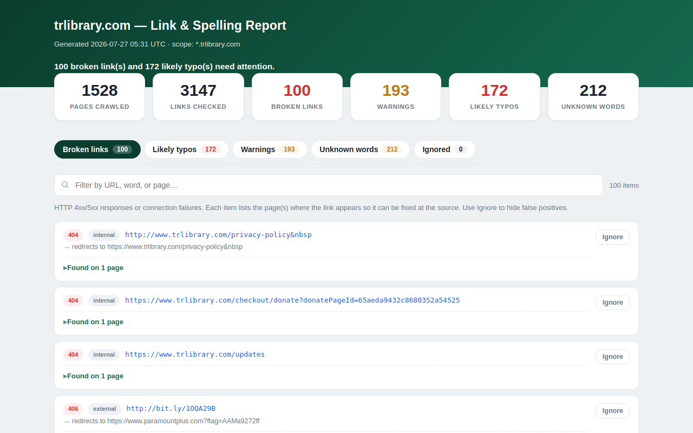

Try it right here
This loads the live project from its own domain, exactly as a visitor would see it.
What it does
A scheduled job crawls a whole site from its sitemap, validates every internal and external link, spell-checks visible text against a dictionary plus an allow-list, and publishes an interactive report.
Issues are grouped by the page they appear on with links straight to what needs fixing, which is the difference between a report someone acts on and a CSV nobody opens. Two dismissal paths exist: a per-browser Ignore button for triage, and a shared committed ignore file for decisions the whole team should keep.
What it can do
- Sitemap-seeded breadth-first crawl across every subdomain of one root domain
- HEAD-then-GET validation that separates real breaks from bot-protection warnings
- Spell check split into likely typos and unknown words, so names and jargon do not drown the signal
- Interactive report grouped by page, plus machine-readable JSON
- Per-browser Ignore that generates copy-ready lines for the shared ignore file
- Threaded crawling and validation, tuned by environment variables
Make it your own
Start by forking the repository into your own organization. Everything below assumes you are working in your fork, not this one.
- Fork the repo and set Settings → Pages → Source to GitHub Actions. That is the only required manual step.
- Set
ROOT_DOMAINto your domain andSITEMAP_URLSto your sitemaps in the workflow file. - Adjust the cron if Monday morning is not the cadence you want.
- Seed
custom_words.txtwith your place names, donor surnames, and jargon so the first report is not swamped by false positives. - Test locally first with
MAX_PAGES=25 python run_check.pyand open the generated report.
Stuck on a step? Open an issue on the repository. Questions from people adapting these for their own institution are the most useful feedback we get.